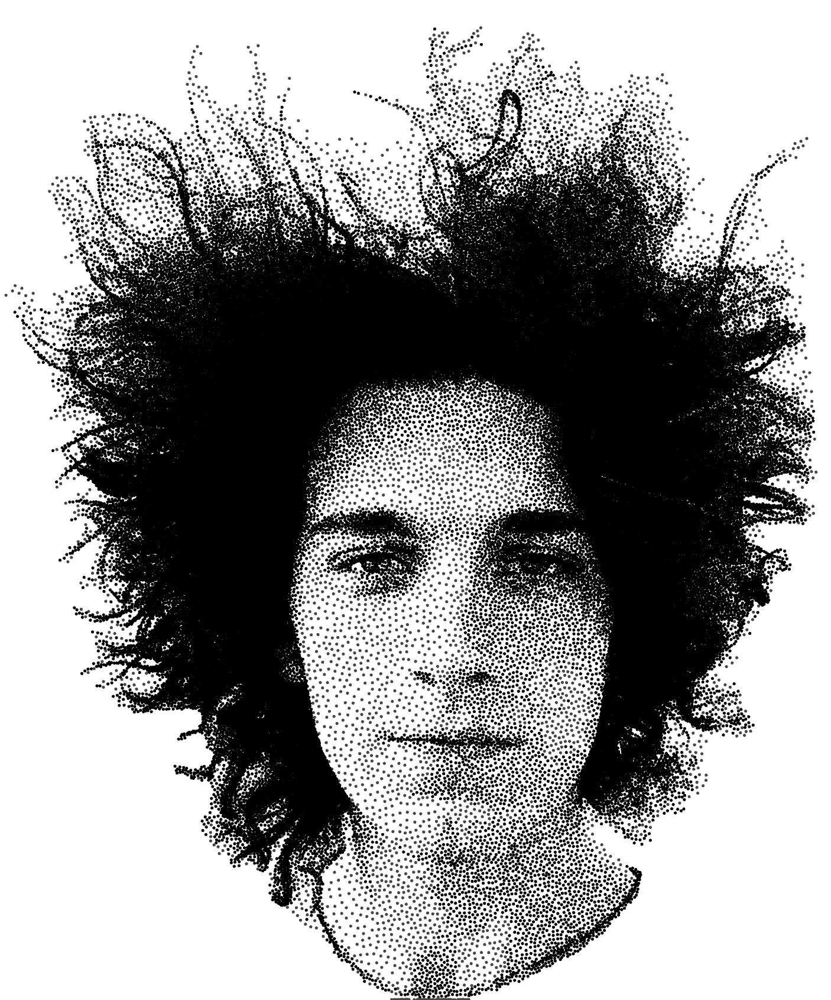

About

Jett Pavlica is a graphics programmer, web developer, and digital designer. They have long been fascinated by the everyday results of advancements in computer graphics, and long believed that our visual interfaces should be intuitive, dependable, and above all beautiful.
Whether it's web apps, digital zines, installation displays, or plotter art, Jett is always looking for the next chance to blend their creative and technical skills.
Jett holds a B.S. in Computer Science from the University of North Carolina at Chapel Hill.